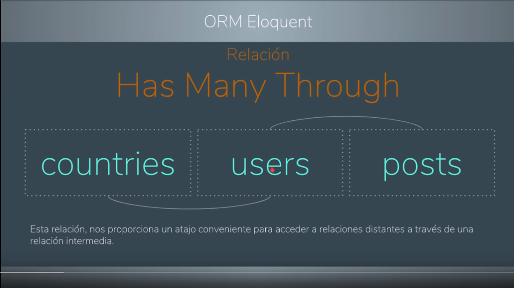
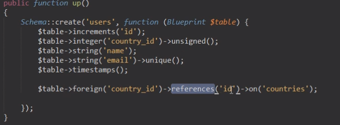
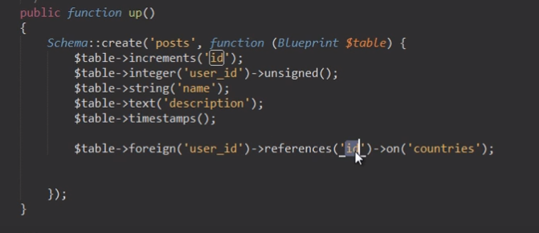
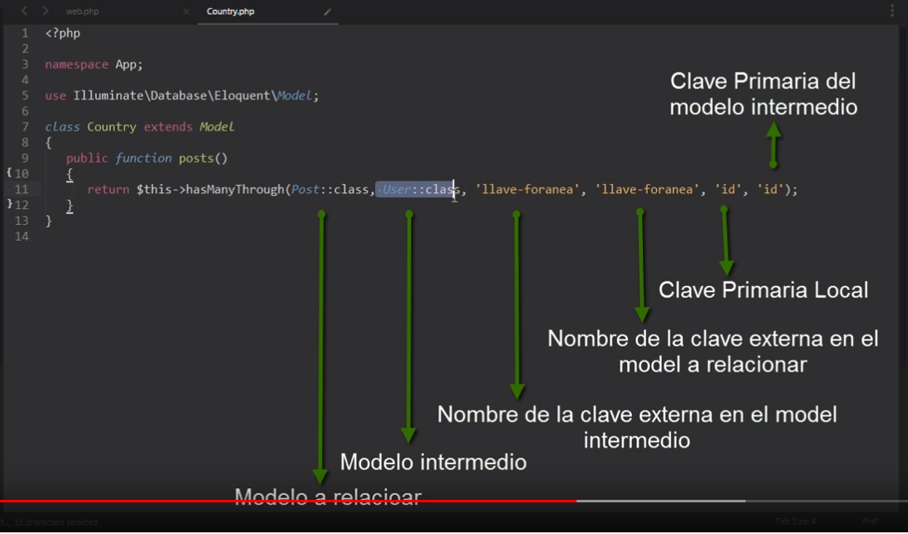
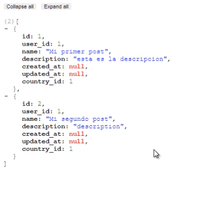

------------------------------------------------------
Relaciones a Distancia.
##############################
Relaciones a Distancia.

https://www.youtube.com/watch?v=c36gWGpU7sA&list=PLzkSGe42b58PDIOwuzkWq3zs-9uj1CzXI&index=29

-->Tiene muchos a travez de: 

-->Poder acceder a una relación a distancia por medio de otra relación.



-->Las tablas son user, country, post la tabla country va normal.

--> user queda   

-->post queda 

-->recordar que pa las migraciones son asi.

-->Se hacen las migraciones de nuevo

#######################  Relciones #####################

$table->unsignedInteger('user_id');
$table->foreign('user_id')->references('id')->on('users');

###########################################################


#######################  Modelo Country #####################

public function posts()
{
    return $this->hasManyThrough('App\Post' , 'App\User');  --> un pais puede tener muchos post a travez de un Usuario.
}



###########################################################

#######################  Consultas #####################

$country=Country::find(1);

return $country->posts;   -->con eso queda. por el intermedio que es user



###########################################################


##############################
------------------------------------------------------
